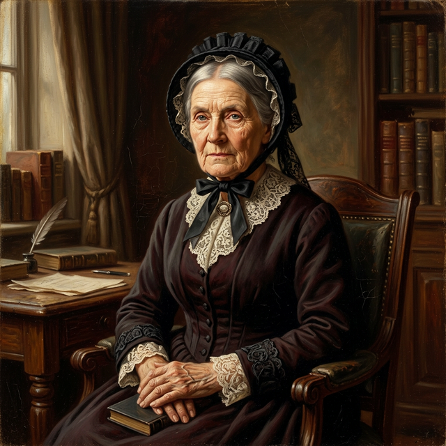
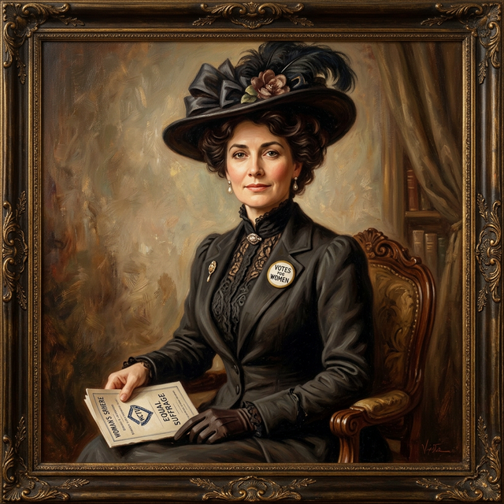

MAKERS OF A NATION
Before 1901, Australia was six separate colonies. Discover the brave men and women who fought to bring our continent together as one united nation.

Sir Henry Parkes
1815 – 1896The "Father of Federation" who gave a famous speech in Tenterfield to unite the colonies.

Sir Edmund Barton
1849 – 1920Australia's first Prime Minister who worked tirelessly to write the rules of our new country.

Mary Lee
1821 – 1909A courageous leader who fought for South Australian women to be the first in the nation to vote.

Vida Goldstein
1869 – 1949The first woman in the British Empire to stand for parliament and a champion for equal rights.

Sir John Quick
1852 – 1932The Cornish boy who became a lawyer and figured out how to let the people vote for Federation.

Alfred Deakin
1856 – 1919The "Silver Tongue" politician who wrote the laws of our new nation and served as Prime Minister three times.